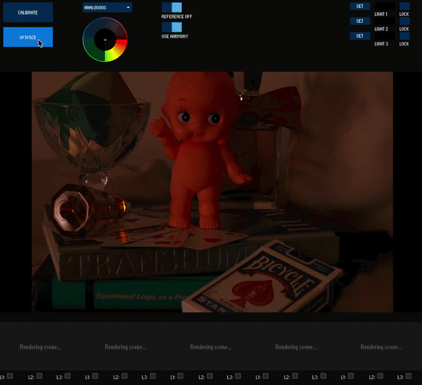
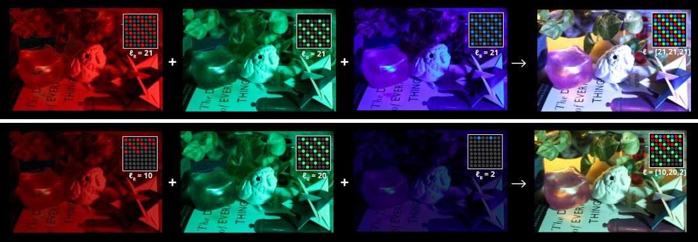
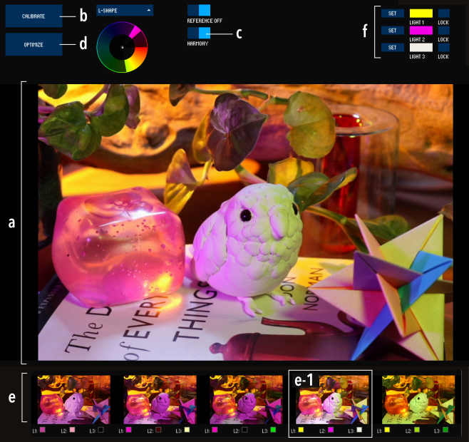
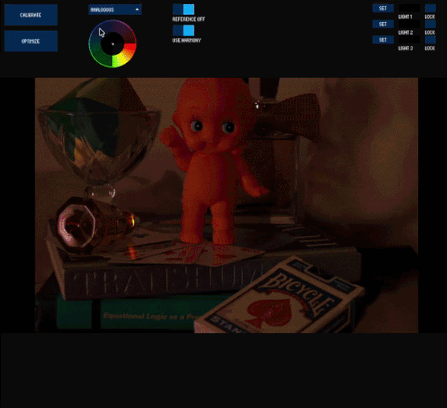
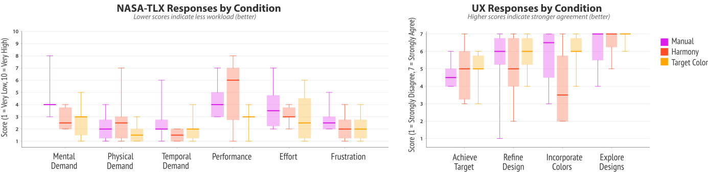
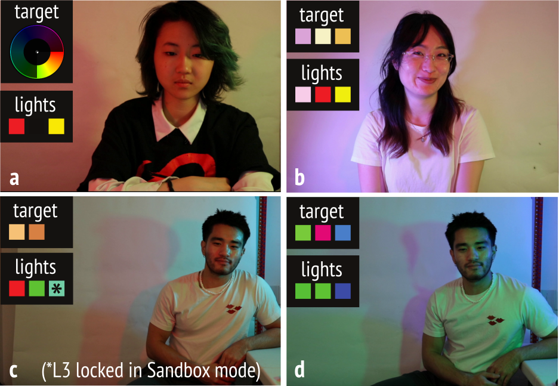
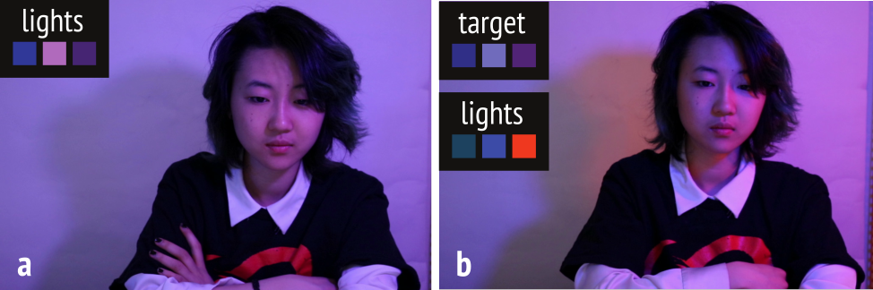
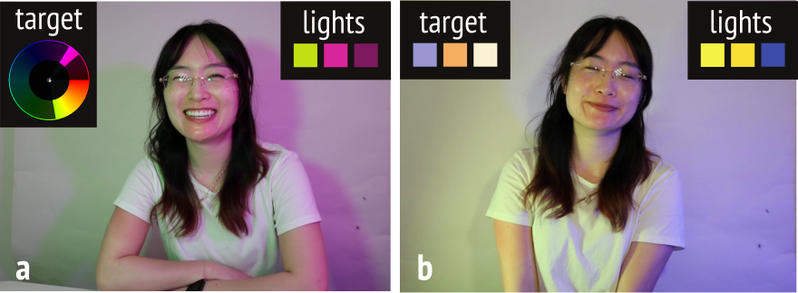

HueRistic: Optimizing Lighting for Live Video Color Design
ACM User Interface Software & Technology (UIST), 2026
Abstract: We present HueRistic, an interactive system that optimizes color in live video through physical lighting control. Our system integrates a camera with programmable LED lights, analyzing the colors in the live feed and measuring the effect of each light source. HueRistic employs closed-loop optimization to find RGB lighting configurations that satisfy specific aesthetic objectives, such as enhancing color harmony or reproducing target colors in the scene. To support rapid exploration, HueRistic includes a design gallery that allows users to compare candidate lighting configurations before applying them to the scene. Our technical evaluation demonstrates that our system accurately simulates and produces high quality lighting solutions that satisfy aesthetic objectives. Our user study finds that HueRistic enables creators to discover lighting parameters that would be challenging to achieve through trial-and-error alone.

Introduction
Color is an essential element that shapes the aesthetics and atmosphere of visual media — it establishes mood, creates visual interest, and crafts distinctive environments. In live-action media such as photography and video, lighting plays a particularly important role in how colors are perceived. The perceived color of a surface depends on both the surface's local color and the spectral properties of incident light; a red apple, for instance, can appear black under green lighting. Thus, beyond its practical role of illuminating subjects, lighting can also serve as a unique tool for color design.
Professional film productions have long used specialized equipment and materials, such as lighting gels, to gain more expressive control over the colors in their scenes. In everyday contexts, programmable smart light ecosystems like the Philips Hue have brought dynamic color into domestic spaces to empower users to personalize interior ambiances. Bridging these two domains, a growing population of modern creators now incorporate colored lighting into their video workflows. Streamers, vloggers, and independent content creators routinely experiment with consumer-grade RGB lights to differentiate their visual style, establish mood, and reinforce personal branding. Controlling color through physical lighting is especially advantageous for popular live video use cases, such as livestreaming, where post-production color correction is infeasible.
However, designing lighting to achieve specific color goals is a nontrivial challenge. For multi-light setups, each light contributes differently to the scene depending on its position, color, and the materials it illuminates, and is also impacted by camera settings such as white balance. Creators must navigate complex spatial light interactions through manual trial-and-error, which involves repeatedly adjusting light placements and color settings, then checking the camera feed until they achieve the desired effect. Although many consumer lighting kits include companion apps with features like manual color selection and predefined palettes, these tools operate independently of the user's physical scene. Consequently, there is no computational support for predicting or controlling how a given lighting configuration will actually affect the colors captured within a given user's setup.
We contribute HueRistic, an interactive system that optimizes physical lighting to meet color design goals in live video. HueRistic integrates a camera and a set of computer-controlled RGB LED matrices, analyzing the colors in the live feed and measuring the effect of each light source. By employing a closed-loop algorithm, HueRistic optimizes physical lighting to meet specific in-scene aesthetic objectives, such as making the scene conform better to a certain color harmony scheme or encouraging specific colors to appear in the scene. To support rapid iteration, the system generates a design gallery that allows users to visualize and compare simulated lighting outcomes before applying them to their physical space. In our technical evaluation, we demonstrate that our system accurately simulates physical lighting outcomes while producing high quality lighting solutions that satisfy aesthetic goals. Our user study reveals that HueRistic inspires users to discover lighting outcomes that would have been difficult to reach through purely manual techniques. Finally, we present applications that highlight the expressive potential of camera-in-the-loop lighting optimization across a variety of real-world color design tasks.
Background and Design Requirements
The goal of our system is to enable users, who may not routinely consider color relationships, to use consumer lighting equipment to make effective video color design decisions. We focus on video content creators, for whom color plays a critical role in visual expression but work with limited production resources relative to professional filmmakers. To ground the design requirements for our lighting system, we informally reviewed lighting tutorial videos, focusing on highly viewed videos (1M+ views) and content from prominent creators (200K+ subscribers). We focused on tutorial videos because tutorial culture is a primary mechanism through which lighting knowledge is disseminated and formalized among content creators. Note that while there are many videos on software-based color correction (e.g., through the use of LUTs), we focus on those that leverage physical lighting to author color.
Current Approaches to Lighting in Video
Unlike professional studios equipped with bespoke sets, independent creators frequently film in constrained, everyday environments such as bedrooms or home offices. Since modifying these physical spaces with paint or elaborate backdrops is often impractical, creators increasingly rely on programmable RGB lighting to fine-tune the colors in their scenes. In these setups, color may serve as a deliberate means of branding and identity; background illumination, practical lights, and vivid rim lighting are routinely used to establish a consistent visual signature across a creator's content or to inject visual interest into an otherwise ordinary space.
While creators can often reason about color at a local level—such as adjusting the color of a single light source—achieving a cohesive overall color composition is much more difficult. Some tutorial creators advocate for systematic planning; for example, applying color harmony rules to select RGB lighting colors. However, simply assigning colors based on a harmony wheel fails to account for how light physically interacts with different objects and materials in the environment. Local material choices can cause a subject to "fade into the background," requiring ad hoc physical adjustments like changing clothes to restore contrast. These examples highlight that, while creators intuitively understand the importance of color for mood, contrast, and branding, they lack the tools to reason holistically about color relationships. Enabling holistic color reasoning would therefore allow creators to achieve greater visual cohesion and intentional contrast without the burden of manual, ad hoc tuning.
Designing a Lighting System for Live Video
To address the limitations of current manual lighting workflows, we identify three design requirements for a computational live video lighting design system:
- D1: Support holistic color reasoning. When setting individual lights, the system should evaluate and coordinate colors holistically across the entire scene.
- D2: Accommodate flexible physical setups. Creators often position light sources opportunistically based on spatial constraints, available equipment, and camera framing. A practical system must allow users to place lights freely and do its best to handle the complex color interactions.
- D3: Enable in situ exploration. Because live video precludes post-production color correction, creators need interactive mechanisms to preview and apply lighting configurations directly in the physical environment.
Based on these requirements, we formulate video color design as a nonlinear optimization, treating the physical lighting environment as a set of decision variables that aim to achieve an aesthetic objective. We developed a physical prototype using a camera and a small set of computer-controlled RGB LED matrices. In a typical workflow, a user positions these programmable lights opportunistically around their environment. After capturing and modeling the scene, our system computes possible RGB assignments that satisfy their chosen aesthetic goal and presents a design gallery of optimal lighting configurations. While HueRistic is designed to support an arbitrary number of lights and any standard camera, our specific prototype uses three 8×8 Adafruit NeoPixel arrays (controlled by an Arduino UNO R4 connected to a consumer laptop) and Canon 80D camera with locked exposure, white balance, and focus settings. We calibrated the camera exposure to prevent highlight clipping when all light sources are at maximum intensity.
System Architecture
HueRistic relies on an iterative optimization algorithm to determine optimal lighting configurations for a given aesthetic goal. At each step of this process, the algorithm evaluates how candidate RGB lighting configurations will alter the colors in the physical scene. To achieve interactive speeds, the algorithm must consider hundreds of candidate configurations per second. Since physically applying these states and measuring the result at each step would introduce significant latency, our system instead models the scene appearance. This model simulates the interactions between the colored lights and the physical environment for fixed camera settings, allowing the solver to quickly predict the resulting scene appearance and navigate toward an optimal lighting assignment.
Modeling Scene Appearance
Our model for how a given RGB LED lighting configuration affects scene colors and illumination assumes that our scene contains $N$ active light matrices with $M$ RGB LEDs per matrix.
We represent the scene as a linear combination of per-channel response images. We first capture a baseline image $B$ with all HueRistic lights turned off. Let $L_c^{\max} = \lfloor \frac{M}{3} \rfloor$ be the maximum LED allocation for color channel $c$. We sequentially activate each color channel (R, G, B) for every active light in the scene at $L_c^{\max}$ and record the resulting image. Then, let $\mathcal{C} = \bigcup_{i=1}^{N} \{ i_R, i_G, i_B \}$ denote the set of independently addressable color channels corresponding to the $N$ active light matrices in the scene. Assuming additive light transport in linear RGB, we compute each channel's isolated irradiance contribution at maximum output ($c \in \mathcal{C}$) by subtracting the baseline in linear space: $D_c = I_c - B$, where $I_c$ is the image captured when channel $c$ is activated at $L_c^{\max}$.

In a typical rendering scenario, we compute the effect of multiple lights by summing their contributions, since light transport is additive. However, the luminous intensity of LEDs is not linearly proportional to their digital control values. For example, setting an RGB LED to red at 50% intensity (127.5, 0, 0) does not produce half the brightness of setting it to 100% intensity (255, 0, 0). To address this, we parameterize light output in terms of the number of activated LEDs in the matrix, which varies linearly with measured luminous intensity. This method mixes light colors by "dithering" the primary RGB channels spatially across the LED matrix.
Given an assignment of LEDs $\ell = (\ell_c)_{c \in \mathcal{C}}$, where $0 \le \ell_c \le L_c^{\max}$, we predict the linear scene appearance $S_{\text{lin}}(\ell)$ under configuration $\ell$ as a weighted sum of calibrated responses:
where $[\cdot]_0^1$ denotes clamping to the range $[0,1]$. This expression yields the expected per-pixel radiance under the specified lighting configuration.

Lighting Optimization
After computing $S_{\text{lin}}(\ell)$, we convert the image to sRGB using a standard color space transformation. Let $S(\ell)$ represent the predicted scene appearance in sRGB space under lighting configuration $\ell$. Our objective is to find an optimal lighting assignment that minimizes energy function $E(\ell)$:
where $C_\text{aesthetic}$ corresponds to an aesthetic cost, $C_\text{diversity}$ is the diversity cost. The aesthetic cost measures how aesthetically pleasing colors in the scene are. As there are many ways to approach aesthetics, we provide two modes that emphasize different color authoring strategies: color harmony and target color.
Color harmony is commonly used as a convenient tool for guiding aesthetic design decisions. A color harmony template defines a radial relationship of colors on the hue wheel (e.g., complementary or analogous colors) represented as one or more angular sectors. In color harmony mode, we measure how well the scene colors align with established color harmony templates based on computational color theory. Since these templates dictate relative hue relationships, they can be rotated by an arbitrary angle $\phi$. For a given harmony template at orientation $T_\phi$, the aesthetic cost is:
where $h_p$ is the hue of pixel $p$, $d(h_p, T_\phi)$ is the circular distance from hue $h_p$ to the nearest sector edge in template $T_\phi$, and $\alpha$ is a constant. To provide a good starting point, we set $\phi$ to an optimal orientation that minimizes the distance between the template's sectors and the initial hue distribution of the baseline image $B$.
While color harmony is still used in practice, there is little empirical evidence that adhering to these classical rules ensures higher aesthetic ratings in large datasets. Instead, alternative patterns of color compatibility suggest a strong preference for a small range of 2-3 colors. To reflect this, our aesthetic cost includes an alternative target color mode, which measures how well-represented desired colors are in the scene. For a given set of target colors $\{\mathbf{t}_k\}$, we sum the minimum $\Delta E_{ab}$ distance between each target and its closest pixel in the scene:
where $\mathbf{c}_p$ denotes the LAB value of pixel $p$, $w_k$ represents the proportion of pixels in the scene for which $\mathbf{t}_k$ is the nearest target color, and $\beta$ is a constant. This formulation penalizes configurations where target colors are distant, while discounting the cost as the targets occupy a larger proportion of the scene.
The color diversity cost aims to encourage visually interesting color structure. Since hue is an angular coordinate, we measure color diversity by mapping all pixel hues onto the unit circle and computing their centroid:
where $\bar{x} = \frac{1}{|S|} \sum_p \cos(h_p)$, $\bar{y} = \frac{1}{|S|} \sum_p \sin(h_p)$, $h_p$ denotes the hue of pixel $p \in S(\ell)$, and $\kappa$ is a constant. This equation measures the magnitude of the mean hue vector. When hues are distributed across the color wheel, their circular components cancel out, keeping the centroid near the origin and yielding a lower cost.
HueRistic Design Tool
The HueRistic design tool provides an interactive frontend for our lighting optimization. Through our interface, users can translate aesthetic objectives into physical lighting parameters by generating and reviewing galleries of optimized designs.

Setup and Calibration
Upon launch, HueRistic presents the live camera feed. After placing their lights, the user selects "calibrate" to have HueRistic analyze the colors in their scene and measure the influence that the lights have on their scene. Calibration must be done each time the user changes the lighting placement or alters their scene in a way that significantly affects its constituent colors.
Defining the Aesthetic Objective
Users can switch between two different interaction modes, corresponding to the aesthetic objectives. HueRistic also provides the option to include a reference image to anchor the aesthetic objectives.
To apply a color harmony objective, users select from a dropdown list of standard templates. The interface visualizes the chosen template on a color wheel, highlighting the active hue sectors. By default, HueRistic analyzes the existing scene colors to determine the optimal orientation for these sectors. If a reference image is active, the system automatically aligns the harmony template with the exemplar's hue distribution. Alternatively, users can select up to three target colors with the built-in digital color picker or by sampling from the reference image. The optimizer then prioritizes physical lighting configurations that ensure these colors are represented within the scene.


Exploring Candidate Lighting Designs
After defining their objective, users select "optimize" to generate candidate lighting configurations. As the optimizer finds solutions, they are added to the design gallery. The gallery visualizes each result and displays the underlying light colors below its thumbnail, allowing users to compare both visual outcomes and physical parameters. Selecting any thumbnail applies that configuration to the physical scene. Rerunning the optimization generates a new set of solutions that satisfy the chosen objective.
Manual Lighting Control
Finally, HueRistic provides manual lighting controls to accommodate specific physical constraints or creative preferences. Users can set individual light colors, or explicitly "lock" and deactivate specific lights to exclude them from the optimization.

Implementation
HueRistic is a full-stack application with a Processing-based user interface and a Python REST API backend. The Python backend executes the core optimization process, handles scene prediction, and sends the results to Processing for display. We solve the optimization using the Nelder-Mead simplex method with random initializations. On an Apple M1 Pro laptop with 16 GB of RAM, the optimization converges on an average of 2.83 seconds with three lights and a 320 × 180 pixel scene representation.
Upon solving for the optimal lighting parameters, the Python server directly communicates these values to the Arduino hardware via serial commands to actuate the physical RGB LED matrices. To visualize the physical light colors within the interface, we calculate the linear intensity of each channel based on the proportion of activated LEDs and then convert these values to sRGB.
Technical Evaluation
To validate the performance and reliability of HueRistic, we conducted a technical evaluation assessing the accuracy of our physical rendering model and the quality of our optimization results.
Lighting Prediction Accuracy
Our lighting optimization relies on a predictive model that estimates the visual appearance of a scene under candidate lighting configurations. We evaluate how closely the predicted images match the physically captured results under controlled conditions.
We position our three RGB LED matrices and camera in a living room environment. After running the system calibration procedure, our test suite generates 100 random 3-color LED configurations, where each configuration assigns a random color to each of the three light sources. For each configuration, we render the predicted scene appearance using our linear model, apply the configuration to the physical lights, and photograph the resulting scene. We then compute the mean $\Delta E_{ab}$ error across all pixels between each pair of predicted and captured images.
Across 100 trials, our evaluation yielded an overall mean per-pixel $\Delta E_{ab}$ error of 3.34 (SD = 0.72) and a mean luminance error of 0.93 (SD = 0.21). As a general rule of thumb for $\Delta E_{ab}$, values $\leq 2.5$ are imperceptible to the human eye, and values between 3.0 and 6.0 are acceptable for commercial reproduction. With an overall mean error of 3.34 and a mean per-pixel error of 5.74 in our worst-case trial, our linear predictive model provides a sufficiently accurate approximation of physical scene appearance to reliably guide the optimization process and visualize expected results.
Optimization Quality
We evaluate whether our optimization is successful at finding meaningful local minima in the solution space and measure the magnitude of that impact. To do this, we quantified the improvement our optimization provides over a baseline of random initialization. A successful algorithm should consistently find high-quality lighting configurations (indicated by a low final aesthetic cost) that outperform naive, random RGB assignments.
Using the same living room scene as Section 6.1, we performed 200 random initializations and measured their (un-optimized) aesthetic cost as the baseline. We then recorded the initial cost of the random initialization, the costs of the optimized colors for each aesthetic objective, and the percent improvement. Then, to evaluate the color harmony feature, we cycled through each of the system's seven available harmony templates. For each template, the system generated a batch of 15 optimized lighting configurations. For target color, we randomly sampled 10 distinct color palettes consisting of three target RGB values and generated 15 optimized lighting configurations per palette. This yielded a total of 255 HueRistic trials to compare against the 200 baseline trials (105 for color harmony and 150 for target color). These experiments used $\alpha=0.4$, $\beta=0.5$, and $\kappa=0.6$ in our energy function $E(\ell)$.
Table 1 reports the average percentage improvement calculated per individual trial. Note that the scales are different for the target color objective because the costs are distance-based, rather than the angular hue deviations used to evaluate the harmony templates. Compared to the baseline, our optimization yields an overall average cost reduction of 58.23% and 44.43% in the color harmony and target color conditions, respectively. These results demonstrate that even with a gradient-free approach like Nelder-Mead, HueRistic consistently discovers lighting configurations that are 30-80% lower cost than naive assignments.
| Harmony Template | Baseline | HueRistic | Average Δ (%) |
|---|---|---|---|
| Analogous | 2.93 | 0.56 | 78.26 |
| Monochromatic | 3.54 | 0.76 | 76.96 |
| X-Shape | 0.46 | 0.18 | 64.66 |
| L-Shape | 1.76 | 0.64 | 60.10 |
| Split-Complementary | 0.85 | 0.37 | 50.58 |
| Complementary | 1.40 | 0.64 | 47.32 |
| Triadic | 0.89 | 0.66 | 29.76 |
| Overall Average (Harmony) | 1.69 | 0.54 | 58.23 |
| Overall Average (Target Color) | 52.91 | 29.22 | 44.43 |

User Evaluation
Our user study aims to understand how effectively HueRistic supports exploratory video color and lighting design relative to standard manual workflows.
Procedure
We recruited six participants (2 female, 2 male, 2 non-binary; mean age 25.8) through convenience sampling, compensating each with a $25 gift card. The 60-minute study employed a within-subjects design to compare three counterbalanced interface conditions: (1) a Manual Baseline, (2) Color Harmony, and (3) Target Color. In these respective modes, participants either manually set individual light colors, selected a desired color harmony scheme for the system to automatically achieve based on existing scene colors, or chose up to three specific colors for the system to reproduce.
For the primary task, participants were allotted 10 minutes per condition to design a visually pleasing livestream lighting setup that complemented their current outfit. We provided participants with RGB LED matrices, which they could position freely. To document the participants' exploration, we captured multiple lighting configurations throughout each task. After each condition, participants rated perceived workload through NASA-TLX and evaluated the tool's creative support using four 7-point Likert items. Following the core task, participants spent 15 minutes in a free-form "Sandbox" mode to explore advanced capabilities, such as reference image matching and workflows that combine manual and automatic control. The session concluded with a semi-structured interview to reflect on their designs and the system's features.
Results
Figure 6 summarizes the in-study survey responses across the three interface conditions. Among our participants, the Target Color condition performed as well as, or better than, the manual baseline across all evaluated dimensions. While the Harmony condition generally demanded less mental and temporal effort than the baseline, the wide variance in perceived Performance and ability to incorporate colors suggests participants had mixed feelings about their final outcomes. This discrepancy likely stems from how the standalone Harmony mode (when used without a reference image) offers the least direct control over specific color outcomes, so participants with clearer goals tended to benefit more from other modes. Guided by this feedback, we implemented a post-study refinement that changed color harmony template rotation from a purely automatic process to one that users can optionally adjust for more control.
Next, to better understand how participants navigated the physical design space, we synthesized their think-aloud comments and interview responses into five emergent themes:
HueRistic Encoded Lighting Design Expert Strategies
Multiple participants described moments of surprise when the optimizer produced configurations that utilized physical interactions between light and materials in ways they had not anticipated. Interestingly, these emergent solutions mirror the advanced strategies taught in professional lighting design classes. For example, P6 was surprised to see a lighting solution that satisfied an analogous color harmony by bringing out the green highlights in their hair, which directly parallels how lighting designers strategically set lights to pick up colors inherent in costumes or makeup. Similarly, P3 and P5 were fascinated by how the system leveraged colored cast shadows on their faces and backgrounds to introduce target hues into the scene. This reflects how professional lighting designers actively think about shadows having color, which they apply through "fill lights" that illuminate dark areas. P4 commented on the non-straightforward relationship between light colors and perceived scene colors, stating that it's not as simple as placing a blue light to get blue. This physical complexity validates a core premise of HueRistic's design: mapping physical lighting parameters to scene appearance is sufficiently unintuitive that computational optimization provides value over pure manual reasoning. P3 described the system as teaching them about how colors interact with light, implicitly learning about how lighting design experts think.

HueRistic Surfaced Non-Obvious Lighting Solutions
Participants consistently reported that HueRistic's optimization modes yielded lighting configurations they would not have discovered through manual exploration alone. Five of the six participants affirmed that the system helped them discover new lighting designs. P2 noted that while they might have eventually reached similar outcomes manually, it would have been much slower. P3 observed that Manual mode made it intractable to explore diverse light combinations; in contrast, HueRistic's recommendations helped them get the desired scene without reasoning about intermediate parameter settings. P4 noted how HueRistic produced bold "funky results" they wouldn't have come up with themselves. Likewise, P6 highlighted how manually assigning colors directly to lights yielded predictable outcomes, but Target Color mode produced a visibly more complex and dimensional scene.

Users Preferred Mixed-Initiative Workflows
While the optimizer was valuable for surfacing unconventional lighting designs, participants preferred combining manual and automatic controls rather than exclusively relying on either. P2 noted that the optimized modes offered more options to look at and reduced cognitive load, but manual mode provided the most direct connection between choices and visible results. The Sandbox mode, enabling locking individual lights or overriding specific colors, was consistently identified as the most effective workflow. P1 independently articulated a desire for maintaining manual control over their key face light while delegating the background to the automatic optimizer. P4 described the ideal workflow as "half manual, half automatic," noting that Sandbox provides more flexibility in constraining optimization results. This reflects a two-phase workflow that several participants converged on independently: using automated modes first for broad exploration, then switching to manual adjustment for refinement.
Previews Helped with Navigating Complex Parameter Spaces
All participants valued the design gallery's simulated thumbnails. P5 said the previews were their favorite part, noting that the color swatches gave them a "vibe" for the scene. P3 appreciated the ability to rapidly scan across different lighting schemes. Participants also noted the reliability of the previews, reporting no unexpected discrepancies when applying rendered results to the physical scene. Previews served a dual function: reducing the time cost of evaluating alternatives and lowering the commitment cost of exploration. This behavior aligns with the design gallery paradigm, where presenting simultaneous candidates supports divergent exploration within complex parameter spaces.
"Good Colors" May Not Always Lead to "Good Lighting"
Participants highlighted an inherent tension between optimizing for vivid colors and maintaining traditional subject illumination. P2, P4, and P6 described the HueRistic outcomes as suitable for parties or artistic applications, though P2 and P4 noted they might not use this style for casual livestreaming. Personal presentation and aesthetic preferences shaped how participants navigated this tradeoff. P6, who prioritized pleasing colors over keeping themselves well-lit, recounted how they tend to look dark on video calls because they "don't really want to be perceived." P5, a hobbyist photographer accustomed to neutral lighting, favored their white-light setup for being indicative of "good lighting," but still appreciated algorithmic choices like colored cast shadows. The relationship between color and lighting underscores the inherent difficulty of lighting design: sometimes solutions intuitively match target objectives, but other times require non-obvious combinations of light colors differing from the final scene appearance.

Applications
While HueRistic is motivated by live video use cases, we present applications that highlight how its lighting optimization can extend to a variety of real-world color design tasks.
Environmental Lighting Design
Motivated by the prevalence of colored lighting in modern smart homes, we explored how users can translate digital concepts into physical environments. We prompted an image generation model to produce two distinct living room concepts: a cozy evening setting and a vibrant party atmosphere. For both scenes, we populated the Target Color objective by sampling hues directly from the generated reference images. In the party scene, the system produced a result that mixes its emitted light with the existing orange ambient lighting. Notably, the cozy scene's final colors differ visibly from the raw light parameters due to the combined effects of cast shadows and the camera's white balance. Crucially, while both scenes use a similar palette of light colors, the system's spatial assignment of these colors creates a visibly different atmosphere.

Physical Color Correction
Whereas our previous applications emphasize stylized lighting designs, HueRistic can also support naturalistic color objectives, such as performing live color correction to compensate for suboptimal camera settings or challenging ambient lighting. Figure 9 illustrates a scenario where the camera's white balance is misconfigured to 2800K. As a result of the camera parameters and ambient lighting, naively setting the physical lights to white yields a heavily blue-tinted scene. Alternatively, configuring the Target Color objective with pure white and the object's peachy tones allows HueRistic to find lighting parameters that neutralize the camera's cool bias for a more natural appearance.

Live Visual Development
Finally, inspired by P5's description of HueRistic as a "live moodboard," we captured a series of experimental photographs. This process highlighted an emergent design workflow where vague initial conditions and surprising algorithmic decisions jointly shape a scene's mood. In a still-life setup with foreground and background lighting, the system leveraged light-material interactions to generate lighting parameters absent from the initial target. In a portrait setup, we documented solutions where the system relied on existing local colors to satisfy most of the color harmony objective, using emitted light only to "complete" the harmony. In two still-life setups, the system creatively satisfied its objectives by blending emitted light with cast shadows. During this process, we also experimented with adjusting cost function weights, such as prioritizing color diversity, to facilitate discovering high-contrast solutions. To better support this type of expressive exploration, we envision expanding user control by translating abstract cost function parameters into semantic sliders.

Discussion, Limitations, and Future Work
There are several limitations in our current prototype that offer opportunities for future research.
As HueRistic relies on the initial scene capture to compute the optimal orientation for color harmony templates, the system cannot accurately compute the optimal template alignment if the initial scene has insufficient ambient light. To overcome this, future systems could leverage scene response images and known camera parameters to estimate object albedo, enabling accurate color interpretation even in low-light conditions. Moreover, as the initial scene capture process sequentially measures the RGB irradiance contributions, it relies on a mostly still scene. The more the subject or environment changes during this process, the more chromatic aberration will be present in the predicted images. To mitigate this issue, future systems could take a high-framerate video of a rapid calibration sequence and extract individual frames of irradiance contributions, instead of capturing images sequentially.
We identify three key areas for improving our optimization pipeline. First, because the process currently relies on random initializations, subsequent iterations might explore better heuristics to guide these starting states for faster convergence and higher-quality results. Second, because our cost function balances competing objectives, one metric can dominate at the expense of the overall aesthetic. For example, the optimizer might cluster all hues into a single active sector, yielding a low harmony cost that outweighs a high diversity cost; consequently, the combined result is mathematically optimal despite the less compelling visual outcome. Finally, feedback from our user study suggests that it may be valuable to consider more diverse objectives, such as prioritizing spatial color or subject illumination. Thus, to ensure high-quality results while accounting for a range of aesthetic objectives, future work could investigate alternative objective formulations or use data-driven approaches to learn optimal cost function coefficients.
There are also some limitations with HueRistic's color resolution. While the optimization aims to find the best lighting configurations based on user target color objectives, the achievable color gamut heavily depends on the visible materials in a given scene. For example, it would not be possible to produce green from a scene with only red objects. setTheme instead of allowing users to specify color objectives in an unconstrained fashion, future iterations of the system could restrict the target color objectives to more feasible outcomes. Additionally, because our scene prediction model relies on activating a discrete number of diodes to achieve specific colors, HueRistic's color resolution is limited by the LED count. Addressing this will require extending our model to account for the non-linear relationship between the voltage input of these light sources and their resulting luminous output.
Finally, we acknowledge limitations in our user evaluation. Our study comprises six participants recruited through convenience sampling, which limits the statistical power of our findings. Notably, participants in our study primarily wore neutrally colored clothing and used a neutral scene environment, which might have limited their opportunity to see a wider expressive range of outcomes.
Conclusion
In this paper, we introduced HueRistic, a system that optimizes physical lighting for live video color design. By abstracting complex lighting design parameters into high-level aesthetic goals, HueRistic enables users to efficiently explore a range of creative looks in situ. Our technical evaluation confirms the accuracy of our lighting simulations and demonstrates that our closed-loop optimization consistently outperforms baseline random guessing in satisfying aesthetic targets. Finally, our user study highlights that this algorithmic support empowers users to find expressive lighting solutions that would be challenging to discover without domain expertise.
Acknowledgments
We thank Evan Shimizu and Jose Echevarria for providing valuable feedback and insights at different stages of the research. We would also like to thank Brian Gormley lending us his nice camera for our prototype.